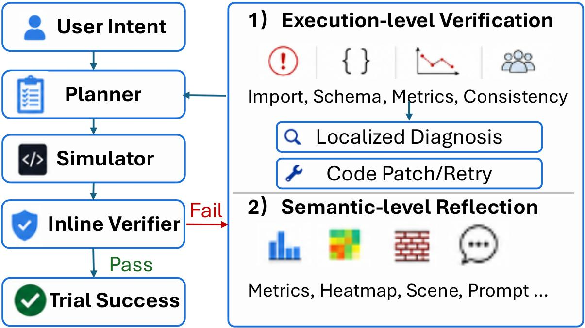
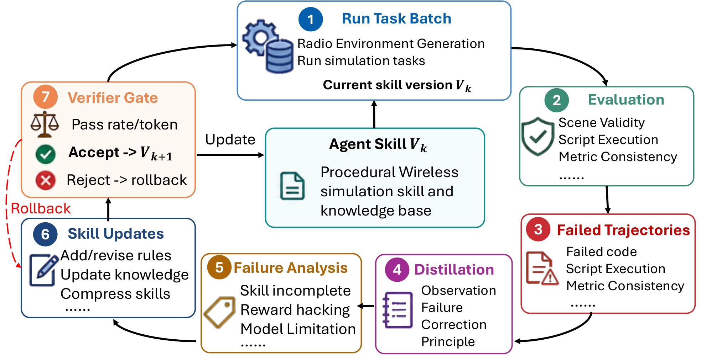

RF-aware worlds
Generated scenes are not just visual layouts. They expose editable objects, radio-material assignments, transmitter placement, and simulator-ready exports.
Why it matters
A valid result must keep geometry, RF materials, device placement, channel assumptions, PHY settings, and analysis objectives mutually consistent. AutoNetSim makes this workflow inspectable and executable.
Generated scenes are not just visual layouts. They expose editable objects, radio-material assignments, transmitter placement, and simulator-ready exports.
The agent produces runnable Sionna workflows for coverage, ray tracing, link-level metrics, network-level outputs, and follow-up planning experiments.
Failures become updates to a human-readable skill substrate, accepted only through geometry, Sionna-load, and physical-trend checks.
Interactive demo
The dashboard lets a user inspect the generated scene, edit furniture and RF parameters, run coverage computation, animate rays, and read BER, PDP, OFDM, and global statistics.

System design
A central orchestrator dispatches typed tasks to specialized workers. Scene building, simulation, reflection, planning, and skill learning all operate through inspectable artifacts instead of free-form chat alone.

Agent workflow
AutoNetSim keeps the radio environment as a structured object-level state, exports it to simulator-facing artifacts, and turns verifier feedback into reusable procedural skill updates.



Main results
The benchmark checks whether the agent produces valid artifacts and simulations: legal geometry, in-bounds furniture, RF-material assignments, Sionna loadability, executable scripts, structured network traces, and physically plausible trends. Main experiments use Claude Sonnet 4.6 as the default backbone.
Resources
This page is designed to stay anonymous during review while still exposing the paper, system overview, demo media, and citation block in one place.
Citation
Use this temporary anonymous entry during review. Replace it with the final author list and venue after publication.
@article{anonymous2026autonetsim,
title = {AutoNetSim: Intent-Driven Wireless Network Experimentation with Self-Evolving Agents},
author = {Anonymous Authors},
year = {2026},
url = {https://anonymous123-max.github.io/agentic-sionna/}
}